Code
hstart <- read.table("/home/nils/dev/mscids-notes/fs26/rtp/data/hstart.dat")
ts <- ts(hstart,start=c(1966,1),freq=12)
plot(ts, main="Residential construction in the USA")
What is the expected period (time period of repetition) and the time step for the following timeseries:
hstart <- read.table("/home/nils/dev/mscids-notes/fs26/rtp/data/hstart.dat")
ts <- ts(hstart,start=c(1966,1),freq=12)
plot(ts, main="Residential construction in the USA")
This is not a stationary time series. A stationary time series is one whose statistical properties (mean, variance, etc) are constant over time. This data fails that definition due to two distinct types of non-stationarity.
set.seed(1)
Et <- ts(rnorm(101, 0, 1))
Et[1] <- 0
y1 <- 0 #delete later
for (i in 2:length(Et)) {
y1[i-1] <- Et[i] - 0.5 * Et[i-1]
}
y1 = y1[2:length(y1)]
ts.y1 = ts(y1)
plot(ts.y1, main="Simulated Time Series Y1", ylab="Y_t", xlab="Time")
abline(h=0, col="red", lty=2)
The time series seems to be stationary.
set.seed(1)
Et <- ts(rnorm(101, 0, 1))
Et[1] <- 0
y1 <- 0 #delete later
for (i in 2:length(Et)) {
y1[i] <- y1[i-1] + Et[i]
}
y1 = y1[2:length(y1)]
ts.y1 = ts(y1)
plot(ts.y1, main="Simulated Time Series Y2", ylab="Y_t", xlab="Time")
abline(h=0, col="red", lty=2)
The time series seems not to be stationary.
set.seed(1)
Et <- ts(rnorm(101, 0, 1))
Et[1] <- 0
y1 <- 0 #delete later
for (i in 2:length(Et)) {
y1[i] <- 0.5 * y1[i-1] + Et[i]
}
y1 = y1[2:length(y1)]
ts.y1 = ts(y1)
plot(ts.y1, main="Simulated Time Series Y3", ylab="Y_t", xlab="Time")
abline(h=0, col="red", lty=2)
The time series seems to be stationary.
set.seed(1)
Et <- ts(runif(101, 0.95, 1.05))
Et[1] <- 0
y1 <- 1 #delete later
for (i in 2:length(Et)) {
y1[i] <- y1[i-1] * Et[i]
}
y1 = y1[2:length(y1)]
ts.y1 = ts(y1)
plot(ts.y1, main="Simulated Time Series Y2", ylab="Y_t", xlab="Time")
abline(h=0, col="red", lty=2)
The time series seems not to be stationary.
# create timeseries object
t <- seq(1, 100, length = 100)
data <- 0.5 * t + 1 + runif(100, -1, 1)
ts <- ts(data)
plot(ts)
length(ts)[1] 100# Applying backward differencing
ts.2 <- diff(ts, lag = 1)
plot(ts.2)
length(ts.2)[1] 99The new time series are 99 units long instead of 100.
# create timeseries object
t <- seq(1, 100, length = 100)
data <- 2 * t **2 + 3 * t - 1 + runif(100, -200, 200)
ts <- ts(data)
plot(ts)
length(ts)[1] 100# Applying backward differencing
ts.2 <- diff(ts, lag = 1)
plot(ts.2)
length(ts.2)[1] 99# Again Applying backward differencing
ts.3 <- diff(ts.2, lag = 1)
plot(ts.3)
length(ts.3)[1] 98Since we applied backward differencing twice, the length of the output time series increased to 98.
hstart <- read.table("/home/nils/dev/mscids-notes/fs26/rtp/data/hstart.dat")
ts <- ts(hstart[, 1], start = c(1966, 1), frequency = 12)
hstart_stl <- stl(ts, s.window = "periodic")
plot(hstart_stl)
hstart <- read.table("/home/nils/dev/mscids-notes/fs26/rtp/data/hstart.dat")
ts <- ts(hstart[, 1], start = c(1966, 1), frequency = 12)
weights <- c(1, rep(2, 11), 1) / 24
filtered <- filter(ts, filter = weights)
plot(ts)
points(filtered, type = "l", col = "blue")
lines(hstart_stl$time.series[, "trend"], col = "red")
hstart <- read.table("/home/nils/dev/mscids-notes/fs26/rtp/data/hstart.dat")
ts <- ts(hstart[, 1], start = c(1966, 1), frequency = 12)
plot(ts)
ts.2 <- diff(ts, lag=12) # Using lag 12 bc 12 months per year
plot(ts.2)
data(co2)
plot(diff(co2, 1), type = "n", ylim = c(-5, 15))
for (l in 1:12) {
ts_diff <- diff(co2, lag = l)
lines(ts_diff, col = rainbow(12)[l])
}
legend("topleft", legend = paste("Lag", 1:12), col = rainbow(12), lty = 1, ncol = 2)
cbe <- read.table("/home/nils/dev/mscids-notes/fs26/rtp/data/cbe.dat", header = TRUE)
ts <- ts(cbe$elec, start = c(1958, 1), frequency = 12)
plot(ts)
At this time, it is not advisable to examine the ACF because the time series is not stationary. We can see trends and seasonality over time. We need to clean that up first before analysing the time series.
decomp <- decompose(ts, type = "multiplicative")
acf(decomp$random, na.action = na.pass)
ts.stl.1 <- stl(log(ts), s.window = "periodic")
plot(ts.stl.1$time.series[, "trend"])
decomp <- decompose(ts.stl.1$time.series[, "trend"], type = "multiplicative")
acf(decomp$random, na.action = na.pass)
monthplot(ts)
ts.stl.2 <- stl(log(ts), s.window = 12)
plot(ts.stl.2$time.series[, "trend"])
decomp <- decompose(ts.stl.2$time.series[, "trend"], type = "multiplicative")
acf(decomp$random, na.action = na.pass)
type = "multiplicative" we assumes that seasonality is proportional to the trend.stl(log(ts), ...) because the original time series had an exponential trend.cbe <- read.table("/home/nils/dev/mscids-notes/fs26/rtp/data/cbe.dat", header = TRUE)
ts <- ts(cbe$elec, start = c(1958, 1), frequency = 12)
ts.2 <- diff(ts, lag=1)
plot(ts.2)
cbe <- read.table("/home/nils/dev/mscids-notes/fs26/rtp/data/cbe.dat", header = TRUE)
ts <- ts(cbe$elec, start = c(1958, 1), frequency = 12)
ts.3 <- diff(ts, lag=12)
plot(ts.3)
Using differencing alone, we eliminate the trend but do not obtain a fully stationary time series.
arima.sim(list(ar = c(0.8)), n = 1000)theo <- ARMAacf(ar = c(0.5, 0.2), lag.max = 100)
sim_data <- arima.sim(model = list(ar = c(0.5, 0.2)), n = 500)
plugin <- acf(sim_data, lag.max = 100, plot = FALSE)$acf
plot(0:100, theo, type = "l")
lines(0:100, plugin)
plot(0:20, ARMAacf(ar = 0.8, lag.max = 20), type = "h")
theo_pacf <- ARMAacf(ar = c(0.5, 0.2), lag.max = 100, pacf = TRUE)
sim_data <- arima.sim(model = list(ar = c(0.5, 0.2)), n = 500)
estim_pacf <- pacf(sim_data, lag.max = 100, plot = FALSE)$acf
plot(1:100, theo_pacf, type = "h", ylim = c(-0.1, 0.6))
lines(1:100, estim_pacf, type = "l")
data <- read.table("/home/nils/dev/mscids-notes/fs26/rtp/data/kreatin.dat", header=TRUE)The Model should follow a Random Walk.
ts <- ts(data$gehalt, start=c(1,1))
plot(ts, main="Creatine Concentration of Human Muscular Tissue")
acf(ts)
pacf(ts)
data <- read.table("/home/nils/dev/mscids-notes/fs26/rtp/data/ts_S3_A2.dat", header=TRUE)plot(ts(data$ts1))
abline(h=mean(data$ts1))
ts1 seems to be stationary.
plot(ts(data$ts2))
abline(h=mean(data$ts2))
ts2 seems not to be stationary.
acf(data$ts1)
pacf(data$ts1)
The time serie 1 seems to be a ACF(1)-process.
acf(data$ts2)
pacf(data$ts2)
The time serie 1 seems to be a ACF(2)-process.
The ACF plot should have a drop at lag 3.
plot(
0:30,
ARMAacf(
ar = c(0.9, -0.5),
lag.max = 30
),
type = "h",
ylab = "ACF"
)
plot(
1:30,
ARMAacf(
ar = c(0.9, -0.5),
lag.max = 30,
pacf = TRUE
),
type = "h",
ylab = "PACF"
)
r.sim1 <- arima.sim(
n = 200,
model = list(ar = c(0.9, -0.5))
)ts.1 <- ts(r.sim1)
plot(ts.1)
acf(ts.1)
pacf(ts.1)
The PACF plot should have a drop at lag 4.
plot(
0:30,
ARMAacf(
ar = c(0.8, -0.5, -0.4),
lag.max = 30
),
type = "h",
ylab = "ACF"
)
plot(
1:30,
ARMAacf(
ar = c(0.8, -0.5, -0.4),
lag.max = 30,
pacf = TRUE
),
type = "h",
ylab = "PACF"
)
r.sim1 <- arima.sim(
n = 200,
model = list(ar = c(0.8, -0.5, -0.4))
)ts.1 <- ts(r.sim1)
plot(ts.1)
acf(ts.1)
pacf(ts.1)
roots_i <- polyroot(c(1, -0.5, -2))
abs(roots_i)[1] 0.5930703 0.8430703The process is not stationary.
roots_ii <- polyroot(c(1, -1))
abs(roots_ii)[1] 1The process is not stationary.
0.5 + x = 1
x = 1 - 0.5
x = 0.5
The process is stationary for \alpha_2 = 0.5.
The condition for stationarity is ∣\alpha∣<1. Therefore, if ∣\alpha∣≥1, the root z=\dfrac{1}{\alpha} lies either on the unit circle (∣z∣=1) or inside it (∣z∣≤1). This mathematically confirms that the model is non-stationary in these cases.
yields <- read.table("http://stat.ethz.ch/Teaching/Datasets/WBL/yields.dat", header = FALSE)
t.yields <- ts(yields[, 1])acf(t.yields)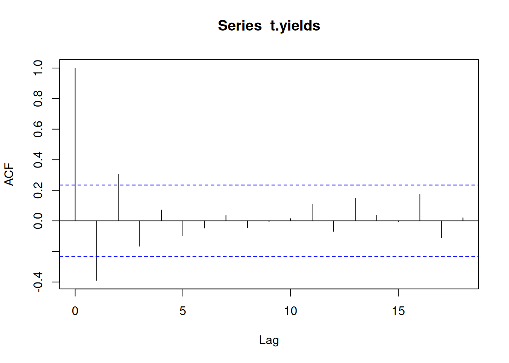
pacf(t.yields)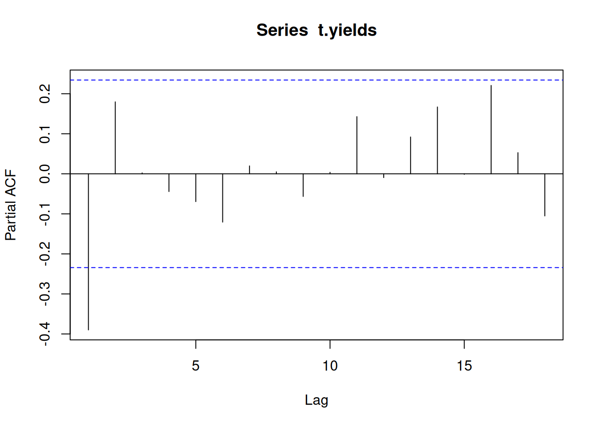
The process could be modelled by a AR(p)-Model with the value p = 3
r.yw <- ar(t.yields, method = "yw", order.max = 3)
r.yw$residTime Series:
Start = 1
End = 70
Frequency = 1
[1] NA NA -23.2701676 8.5624227 -1.7185396 5.1017154
[7] 10.3471780 -11.2034906 3.9364420 1.2089867 17.4563283 -9.2111662
[13] -2.8577303 -6.3524133 2.2572167 -2.9311234 25.3567725 14.3859910
[19] -18.0787717 17.6571812 9.7250352 1.7201979 0.7723057 7.4553688
[25] -3.0885436 2.3171776 1.8505361 -7.5446312 -27.8857718 0.6164494
[31] 6.0842678 18.0959587 11.4294237 20.8583891 5.3106389 2.4003827
[37] -3.7281741 -0.3234123 -13.1089096 -2.4829289 0.5084360 2.3548536
[43] -4.3282096 3.2157029 1.8505361 9.4553688 -3.4489132 8.6379522
[49] -2.7310524 -4.0412731 -11.3891299 3.5161116 8.7481019 -10.3049653
[55] -2.0635580 0.2900955 -18.1456261 -21.2240340 0.7913572 -2.3118589
[61] 14.3954080 -6.6314966 -8.3591694 10.8697651 -9.0885436 2.3982863
[67] -6.4316031 0.8978066 6.7490614 -28.2653704str(r.yw)List of 15
$ order : int 2
$ ar : num [1:2] -0.32 0.18
$ var.pred : num 120
$ x.mean : num 51.1
$ aic : Named num [1:4] 9.84 0.298 0 2
..- attr(*, "names")= chr [1:4] "0" "1" "2" "3"
$ n.used : int 70
$ n.obs : int 70
$ order.max : num 3
$ partialacf : num [1:3, 1, 1] -0.38988 0.17971 0.00226
$ resid : Time-Series [1:70] from 1 to 70: NA NA -23.27 8.56 -1.72 ...
$ method : chr "Yule-Walker"
$ series : chr "t.yields"
$ frequency : num 1
$ call : language ar(x = t.yields, order.max = 3, method = "yw")
$ asy.var.coef: num [1:2, 1:2] 0.01444 0.00563 0.00563 0.01444
- attr(*, "class")= chr "ar"Yule-Walker-Koeffizienten:
Model:
X_t = -0.32 \cdot X_{t-1} + 0.18 \cdot X_{t-2} + \varepsilon_t
r.burg <- ar(t.yields, method = "burg", order.max = 3)
r.burg$residTime Series:
Start = 1
End = 70
Frequency = 1
[1] NA NA -23.0964972 8.1701783 -1.3785617 4.8728473
[7] 10.5505765 -11.1978722 3.7977236 1.3403098 17.3914298 -8.9537665
[13] -3.1238980 -6.2261379 2.0994588 -2.8089304 25.2454443 14.7685021
[19] -18.1260033 17.4687299 10.0560689 1.6430522 0.8457311 7.4219430
[25] -2.9745155 2.2116763 1.9437802 -7.5780570 -27.9582418 0.3118307
[31] 6.2684408 18.0559266 11.6802172 20.8533189 5.5789133 2.3108038
[37] -3.6390123 -0.4223073 -13.0529651 -2.6805103 0.5941087 2.3064707
[43] -4.2697412 3.1267173 1.9437802 9.4219430 -3.3100186 8.5134115
[49] -2.5474727 -4.1848533 -11.3514455 3.3500029 8.8893344 -10.2828313
[55] -2.2022764 0.3468193 -18.1782727 -21.4299662 0.6474050 -2.2228832
[61] 14.3097254 -6.4014872 -8.5781282 10.8990986 -8.9745155 2.2181858
[67] -6.2936738 0.7334424 6.8588212 -28.2490633str(r.burg)List of 15
$ order : int 2
$ ar : num [1:2] -0.332 0.183
$ var.pred : num 113
$ x.mean : num 51.1
$ aic : Named num [1:4] 11.039 0.385 0 1.993
..- attr(*, "names")= chr [1:4] "0" "1" "2" "3"
$ n.used : int 70
$ n.obs : int 70
$ order.max : num 3
$ partialacf : num [1:3, 1, 1] -0.4067 0.183 0.0103
$ resid : Time-Series [1:70] from 1 to 70: NA NA -23.1 8.17 -1.38 ...
$ method : chr "Burg"
$ series : chr "t.yields"
$ frequency : num 1
$ call : language ar(x = t.yields, order.max = 3, method = "burg")
$ asy.var.coef: num [1:2, 1:2] 0.0136 0.0053 0.0053 0.0136
- attr(*, "class")= chr "ar"Burg-Koeffizienten:
Model:
X_t = -0.332 \cdot X_{t-1} + 0.183 \cdot X_{t-2} + \varepsilon_t
r.mle <- ar(t.yields, method = "mle", order.max = 3)
r.mle$residTime Series:
Start = 1
End = 70
Frequency = 1
[1] NA NA -23.083437837 7.762346509 -1.201980697
[6] 4.561565507 10.602738000 -11.334850093 3.581349256 1.337116357
[11] 17.216926017 -8.885802464 -3.460572312 -6.220191632 1.865930909
[16] -2.816243379 25.041428463 14.930022474 -18.332496024 17.218498832
[21] 10.197216932 1.428770775 0.782162438 7.273056970 -3.008346873
[26] 2.007435328 1.906279662 -7.726943030 -28.119035966 0.003476264
[31] 6.334762287 17.898351229 11.739491795 20.694392418 5.637512389
[36] 2.088058169 -3.689772086 -0.617858931 -13.115858157 -2.934860904
[41] 0.570317679 2.153690370 -4.337204163 2.944199681 1.906279662
[46] 9.273056970 -3.326921661 8.292016980 -2.521379225 -4.423401367
[51] -11.422577628 3.121270050 8.899174969 -10.398085740 -2.418650744
[56] 0.292840720 -18.318244153 -21.679521763 0.471483903 -2.242329450
[61] 14.131552552 -6.345881671 -8.876375881 10.832761513 -9.008346873
[66] 1.963159691 -6.288177902 0.491225167 6.843044015 -28.364092605str(r.mle)List of 15
$ order : int 2
$ ar : num [1:2] -0.341 0.187
$ var.pred : num 113
$ x.mean : num 51.2
$ aic : Named num [1:4] 10.808 0.301 0 1.969
..- attr(*, "names")= chr [1:4] "0" "1" "2" "3"
$ n.used : int 70
$ n.obs : int 70
$ order.max : num 3
$ partialacf : NULL
$ resid : Time-Series [1:70] from 1 to 70: NA NA -23.08 7.76 -1.2 ...
$ method : chr "MLE"
$ series : chr "t.yields"
$ frequency : num 1
$ call : language ar(x = t.yields, order.max = 3, method = "mle")
$ asy.var.coef: num [1:2, 1:2] 0.0136 0.0053 0.0053 0.0136
- attr(*, "class")= chr "ar"d.force <- read.table("http://stat.ethz.ch/Teaching/Datasets/WBL/kraft.dat", header = FALSE)
ts.force <- ts(d.force[, 1])ts.forceA <- window(ts.force, end = 280)
plot(ts.forceA)
pacf(ts.forceA)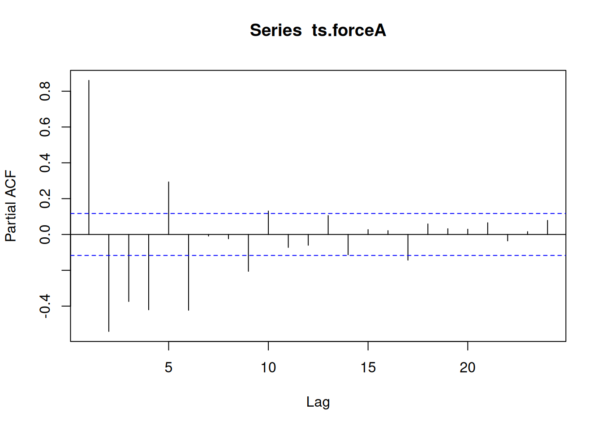
ar.force <- ar(ts.forceA, method = "ols", order = 6)
ar.force$aic 0 1 2 3 4 5 6
661.05054 283.10981 180.20653 135.93284 80.06312 58.33776 0.00000 ar.force <- arima(ts.forceA, order = c(6, 0, 0), method = "ML")
plot(ar.force$res)
abline(h=0, col="red", lty=2)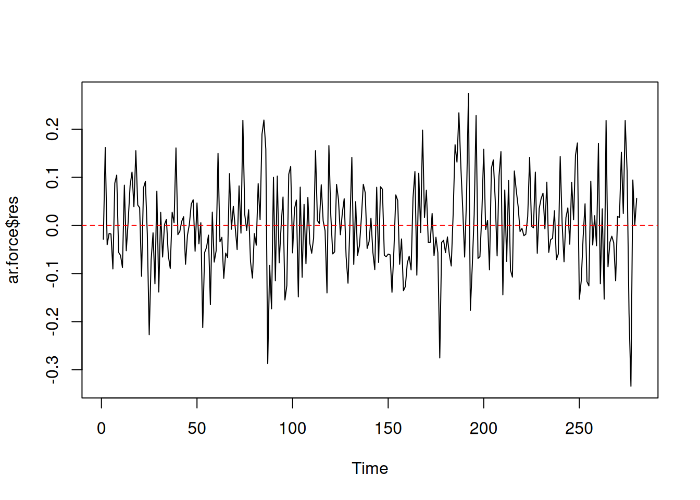
The model seems to be appropriate for this time series since the residuals looks normal distributed.
arma.1 <-arima.sim(n=250,list(ar=c(-0.75),ma=c(-0.3, 0.25)))arma.2 <-arima.sim(n=250,list(ar=c(-0.75, -0.3),ma=c(0.25)))library(fpp2)
data(sunspotarea)
plot(sunspotarea)
ts.sunspotarea <- ts(log(sunspotarea))
ts.sunspotareaA <- window(ts.sunspotarea, end = 100)acf(ts.sunspotareaA)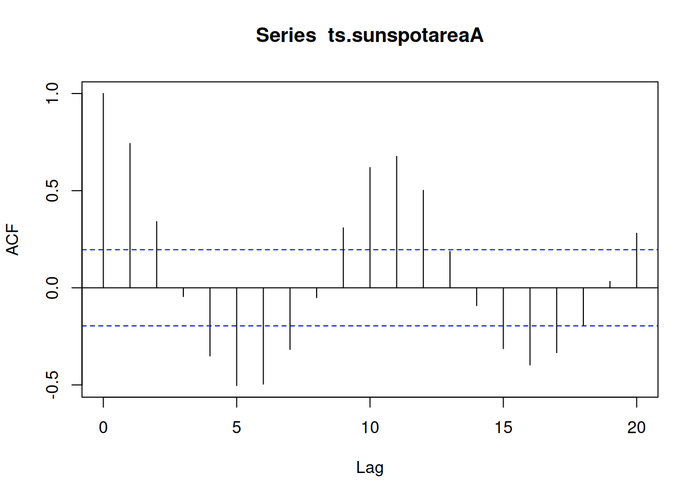
pacf(ts.sunspotareaA)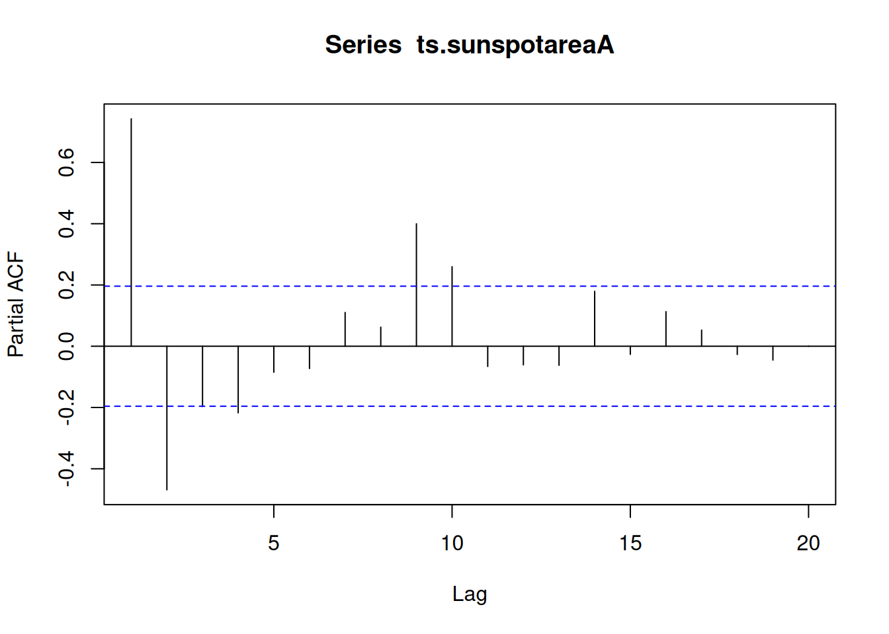
Based on the (p-)acf, we choose a AR-model with the value p = 3
t.url <- "http://stat.ethz.ch/Teaching/Datasets/WBL/varve.dat"
d.varve <- ts(scan(t.url)[201:550])plot(d.varve)
Yes, there is a need for log-transform.
plot(log(d.varve))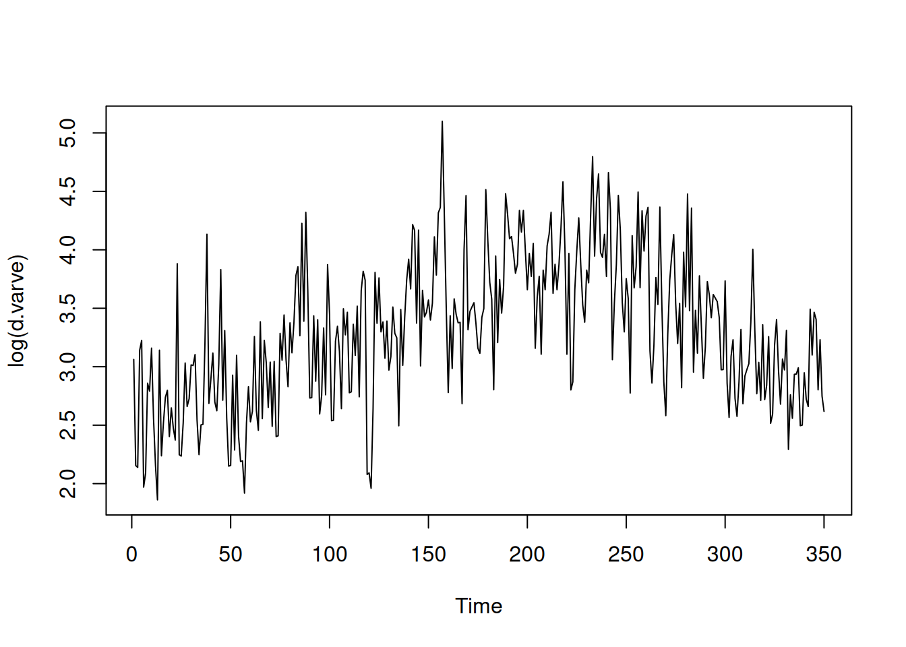
The time series it not stationary by simply using log-tranformation. We try differencing.
plot(diff(d.varve, 10))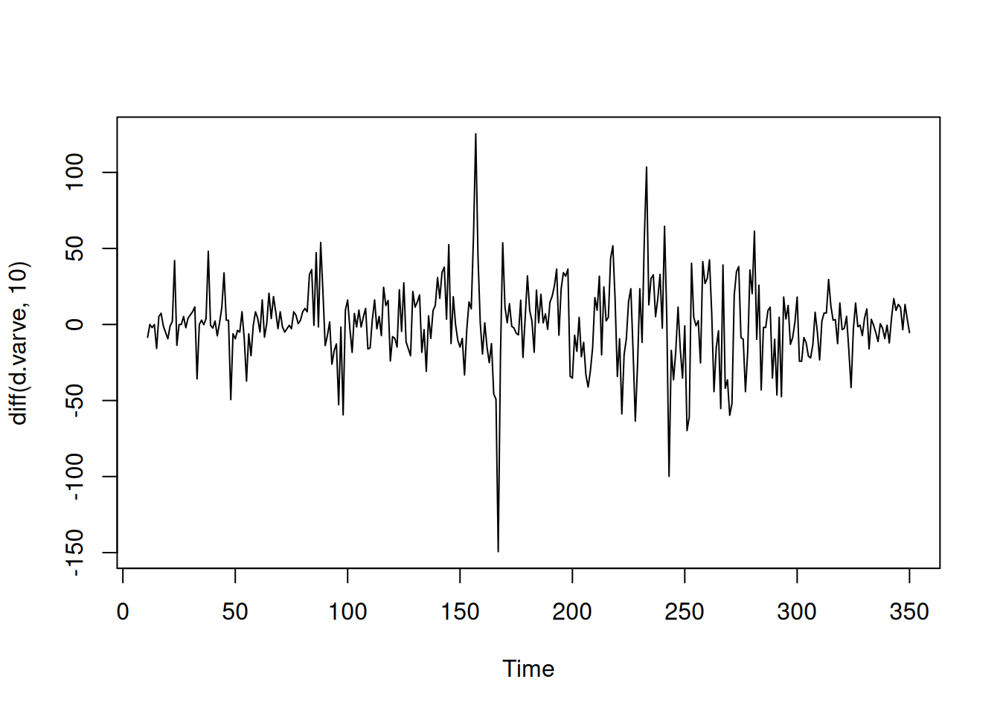
Looks good now.
arima.1 <-arima.sim(
n=250,
order=c(2, 1, 2),
list(
ar=c(0.5, 0,5),ma=c(-0.4, 0.3)
)
)The problem: ar part of model is not stationary!
# 1. Define the coefficients as polynomials: c(1, -coef1, -coef2)
ar_poly <- c(1, -0.5, -0.5)
diff_poly <- c(1, -1)
# 2. Multiply the polynomials using convolution
# We reverse the second vector (diff_poly) because of how convolve() calculates
arma_ar_poly <- convolve(ar_poly, rev(diff_poly), type = "open")
# View the resulting polynomial: 1 - 1.5*B + 0*B^2 + 0.5*B^3
print(arma_ar_poly) [1] 1.0 -1.5 0.0 0.5# Output: [1] 1.0 -1.5 0.0 0.5
# 3. Extract the ARMA coefficients
# Drop the intercept (the first '1') and flip the signs back to standard AR format
arma_ar_coefs <- -arma_ar_poly[-1]
# 4. The MA coefficients remain identical to the original ARIMA model
arma_ma_coefs <- c(-0.4, 0.3)
# Print final coefficients
cat("Equivalent ARMA AR coefficients:", arma_ar_coefs, "\n")Equivalent ARMA AR coefficients: 1.5 0 -0.5 cat("Equivalent ARMA MA coefficients:", arma_ma_coefs, "\n")Equivalent ARMA MA coefficients: -0.4 0.3 Note: Solution generated by AI (Gemini 3.1 Pro).
d.beluga <- read.table("http://stat.ethz.ch/Teaching/Datasets/WBL/beluga.dat", header = TRUE)
d.beluga <- ts(d.beluga)y = lm(NURSING ~ ., data=d.beluga)
y
Call:
lm(formula = NURSING ~ ., data = d.beluga)
Coefficients:
(Intercept) PERIOD BOUTS LOCKONS DAYNIGHT
0.5602842 0.0001998 0.8784967 2.3903512 -0.3416237 plot(y$res, type="l")
abline(h=0, col="red")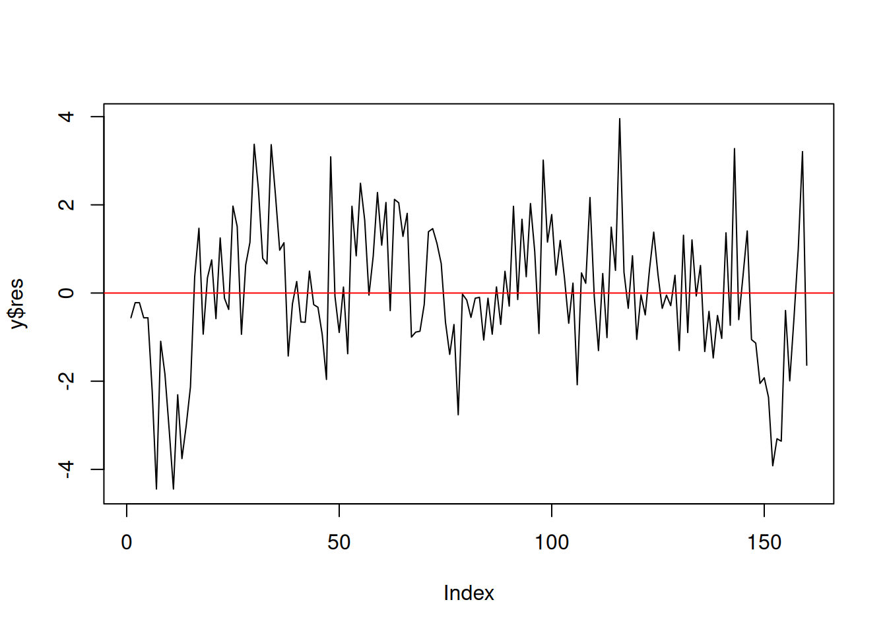
acf(d.beluga)r.burg <- ar(
x=d.beluga,
order.max=8
)
plot(r.burg$res)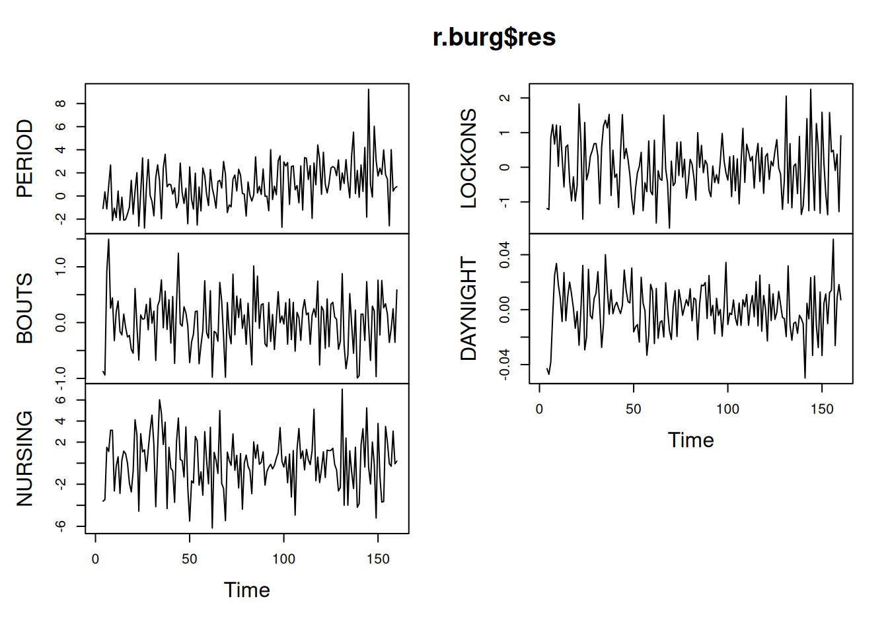
library(nlme) # Load the package containing the procedure gls()
r.bel.gls <- gls(
NURSING ~ BOUTS + LOCKONS + DAYNIGHT + PERIOD,
data = d.beluga,
correlation = corARMA(
form = ~PERIOD,
p = r.burg$order,
q = 0,
fixed = FALSE
),
method = "ML"
)
summary(r.bel.gls)Generalized least squares fit by maximum likelihood
Model: NURSING ~ BOUTS + LOCKONS + DAYNIGHT + PERIOD
Data: d.beluga
AIC BIC logLik
562.0881 589.7647 -272.0441
Correlation Structure: ARMA(3,0)
Formula: ~PERIOD
Parameter estimate(s):
Phi1 Phi2 Phi3
0.25683813 0.35339180 0.04517223
Coefficients:
Value Std.Error t-value p-value
(Intercept) 1.2919742 0.7810844 1.654078 0.1001
BOUTS 0.2794180 0.3358771 0.831906 0.4067
LOCKONS 2.5827939 0.1966869 13.131499 0.0000
DAYNIGHT -0.3072369 0.1572643 -1.953634 0.0525
PERIOD 0.0027855 0.0064980 0.428668 0.6688
Correlation:
(Intr) BOUTS LOCKON DAYNIG
BOUTS -0.291
LOCKONS -0.103 -0.811
DAYNIGHT -0.018 -0.132 0.066
PERIOD -0.619 -0.228 0.241 0.023
Standardized residuals:
Min Q1 Med Q3 Max
-2.80574698 -0.59171135 0.01765555 0.65367271 2.49056057
Residual standard error: 1.576717
Degrees of freedom: 160 total; 155 residuald.resid <- ts(resid(r.bel.gls))t.url <- "http://stat.ethz.ch/Teaching/Datasets/WBL/varve.dat"
d.varve <- ts(scan(t.url)[201:550])acf(diff(log(d.varve)))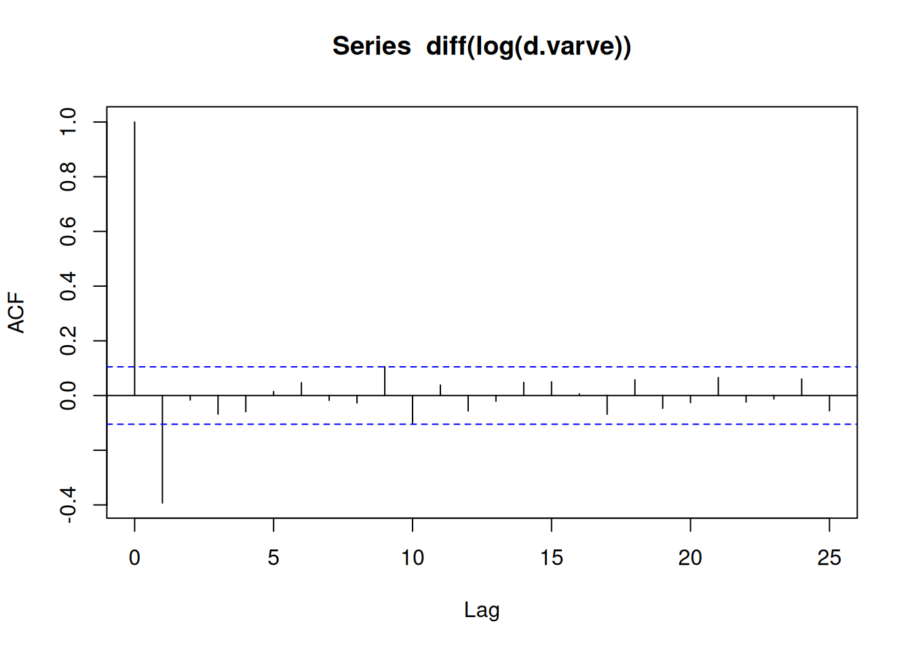
pacf(log(d.varve))
r.varve <- arima(
x=log(d.varve),
order = c(2, 1, 2),
method="ML"
)
r.varve
Call:
arima(x = log(d.varve), order = c(2, 1, 2), method = "ML")
Coefficients:
ar1 ar2 ma1 ma2
-0.1442 0.1452 -0.5334 -0.3548
s.e. 0.5439 0.1345 0.5453 0.4968
sigma^2 estimated as 0.2132: log likelihood = -226.21, aic = 462.42y = -0.1442\alpha_1 + 0.1452\alpha_2 + -0.5334\beta_1 + -0.3548\beta_2 + \varepsilon_0
library(astsa)
data(prodn)
plot(prodn)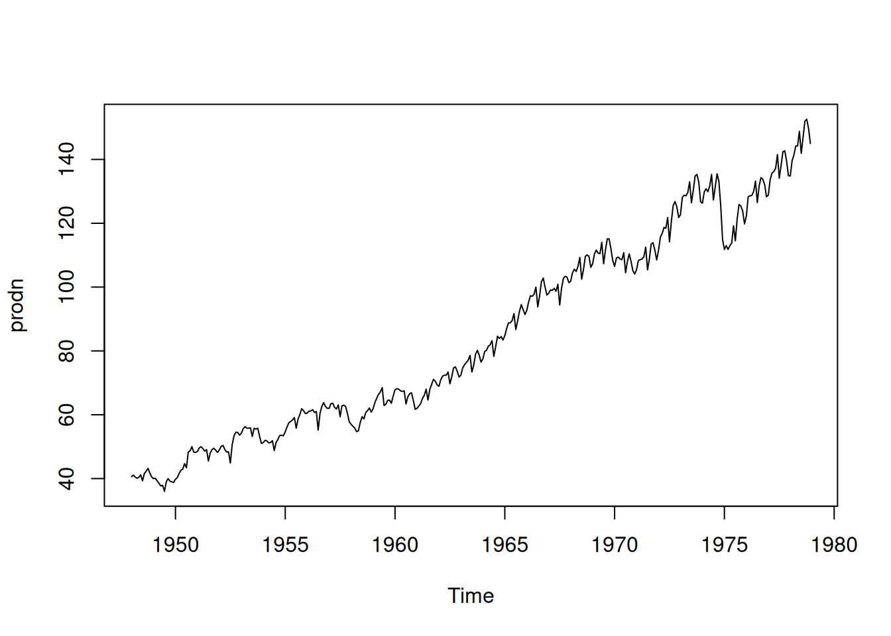
plot(diff(log(prodn)))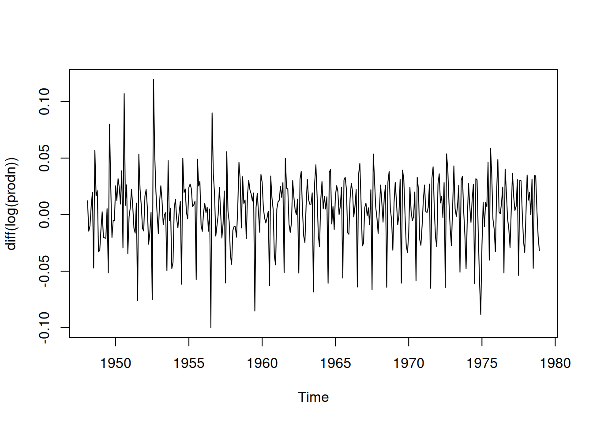
prodn.trans <- diff(log(prodn))
acf(prodn.trans)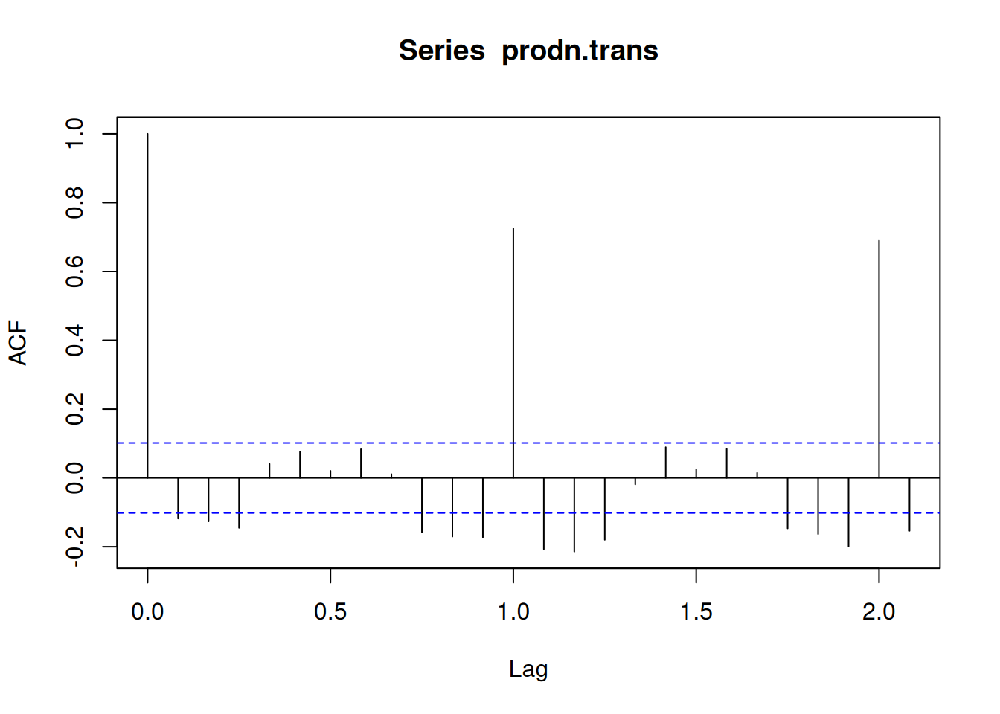
pacf(prodn.trans)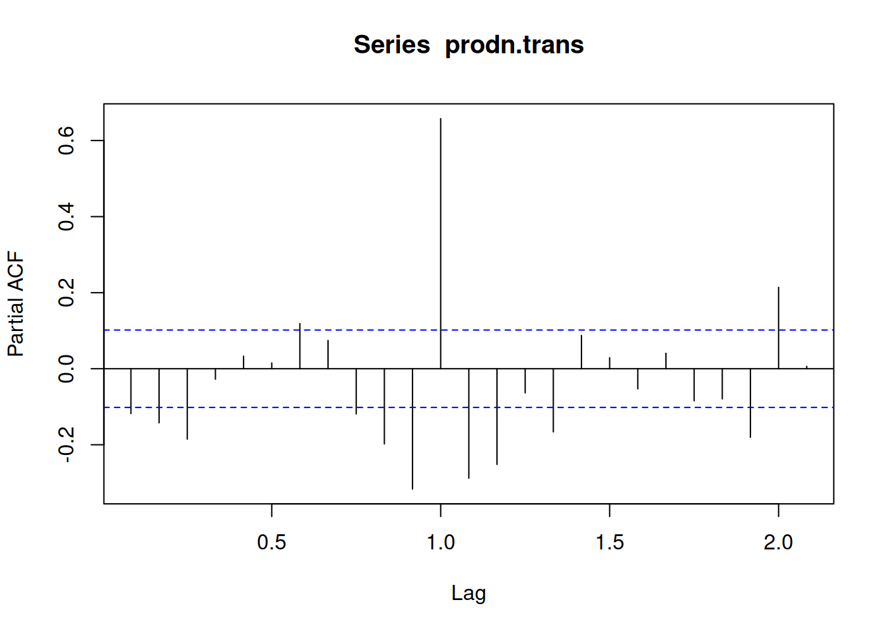
library(forecast)
fit<-arima(
x=prodn.trans,
order=c(1,1,1),
seasonal=c(1,1,1)
)
tsdisplay(fit$residual)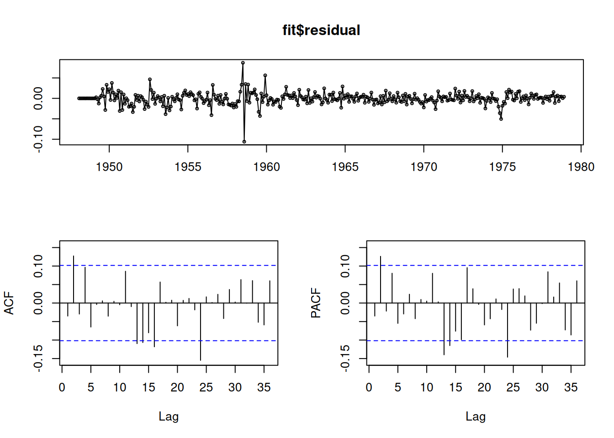
fitAuto<-auto.arima(prodn.trans, ic="aic")
fitAutoSeries: prodn.trans
ARIMA(3,0,0)(2,1,1)[12]
Coefficients:
ar1 ar2 ar3 sar1 sar2 sma1
0.2431 0.1458 -0.0493 -0.1832 -0.240 -0.6940
s.e. 0.0527 0.0544 0.0531 0.0708 0.063 0.0583
sigma^2 = 0.0002249: log likelihood = 993.91
AIC=-1973.83 AICc=-1973.51 BIC=-1946.65tsdisplay(fitAuto$residual)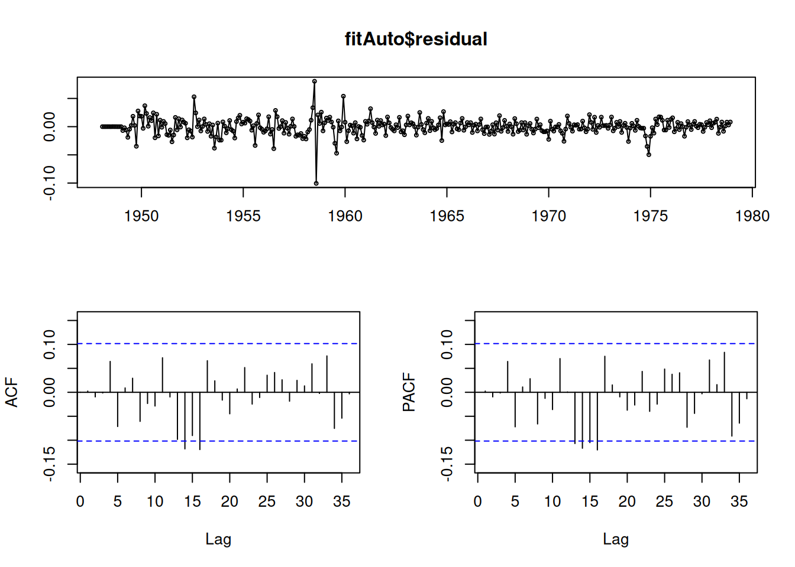
library(fpp2)
lsunspot100 <- window(log(sunspotarea), start = 1875, end = 1974)
fit.ar10 <- arima(lsunspot100, order = c(10, 0, 0))
fit.ar10
Call:
arima(x = lsunspot100, order = c(10, 0, 0))
Coefficients:
ar1 ar2 ar3 ar4 ar5 ar6 ar7 ar8
0.7171 -0.1887 0.0045 -0.0621 0.0220 -0.1140 0.1694 -0.2284
s.e. 0.0938 0.1175 0.1176 0.1180 0.1159 0.1183 0.1184 0.1189
ar9 ar10 intercept
0.1272 0.3601 6.1045
s.e. 0.1207 0.0970 0.2597
sigma^2 estimated as 0.3439: log likelihood = -91.1, aic = 206.2pred <- predict(fit.ar10, n.ahead = 100)
plot(x=lsunspot100, xlim = c(1875, 2074))
abline(h = fit.ar10$coef["intercept"], lty = 2)
lines(pred$pred, col = "green")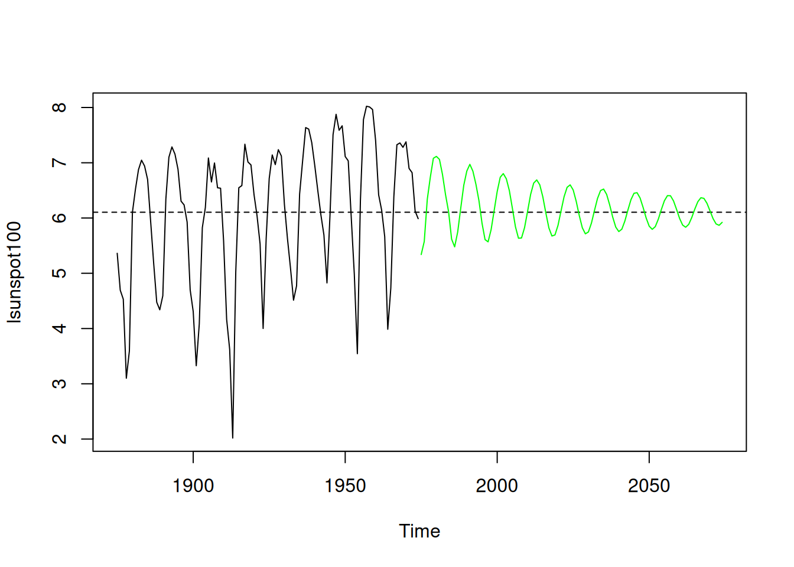
pred_b <- predict(fit.ar10, n.ahead = 37)
plot(lsunspot100,
main = "Log-Transformed Sunspot Area with AR(10) Predictions",
ylab = "Log(Area)",
xlab = "Year",
xlim = c(1875, 2015))
lines(pred_b$pred, col = "blue", lwd = 2)
lines(pred_b$pred + 1.96 * pred_b$se, col = "red", lty = 2)
lines(pred_b$pred - 1.96 * pred_b$se, col = "red", lty = 2)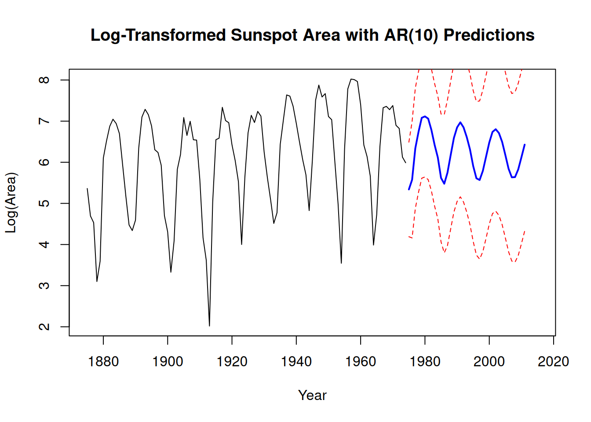
# 6. Calculate the Mean Squared Forecasting Error (MSFE)
# Extract the actual observed values for the out-of-sample period (1975-2011)
actual_out_of_sample <- window(sunspotarea, start = 1975, end = 2011)
# Compute the Mean Squared Error between actuals and predictions
msfe <- mean((actual_out_of_sample - pred_b$pred)^2)
cat("Mean Squared Forecasting Error (MSFE):", msfe, "\n")Mean Squared Forecasting Error (MSFE): 1562725 Note: Solution generated by AI (Gemeni 3.1 Pro).
data("AirPassengers")
d.air <- AirPassengers
d.airshort <- window(d.air, end = c(1956, 12))
plot(d.airshort)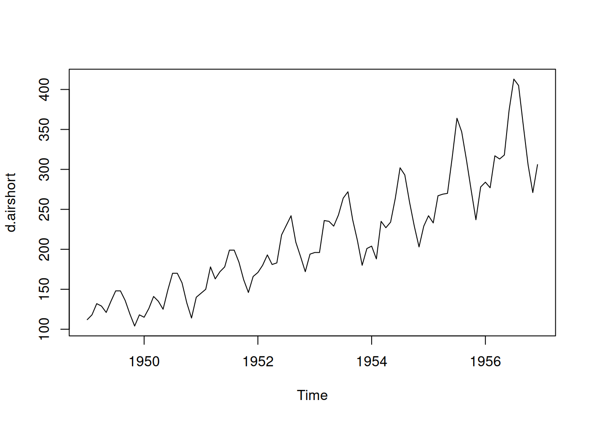
d.airshort.trans <- diff(log(d.airshort))
fit <- auto.arima(d.airshort.trans, ic="aic")
#Perform forecast
fc <- predict(fit, n.ahead=4*12)
#Plot everything
plot(
x=d.airshort.trans,
lty=3,
xlim=c(1957,1960)
)
lines(d.airshort, lwd=1)
lines(fc$pred, lwd=2, col="red")
lines(fc$pred+fc$se*1.96, col="blue")
lines(fc$pred-fc$se*1.96, col="blue")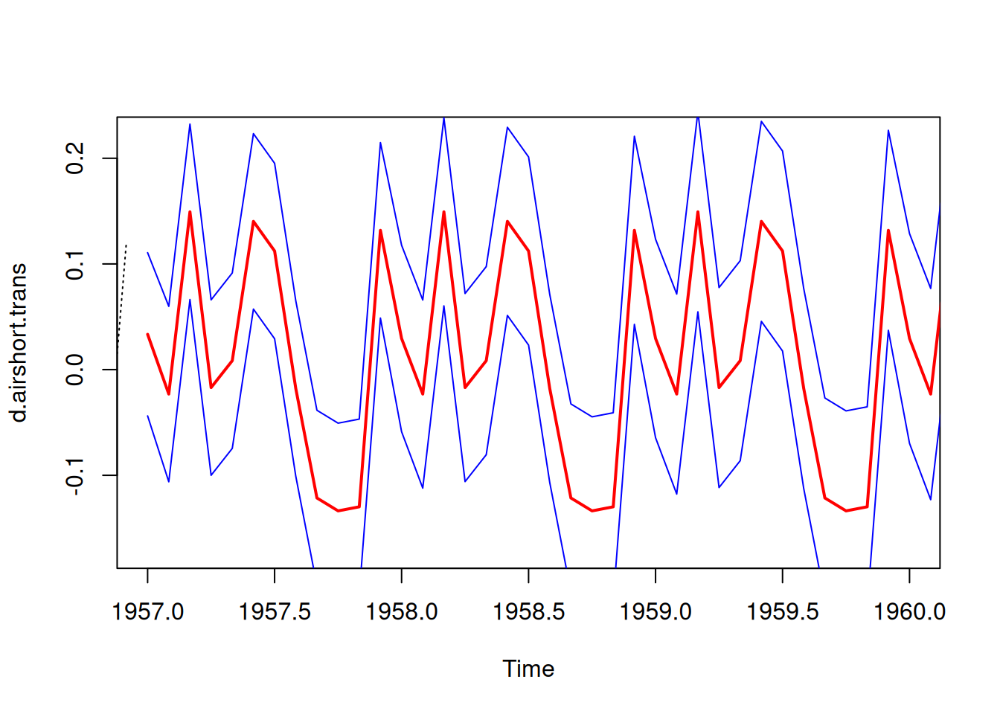
| Process | Simplified Formula | Mean | Variance | Stationary? | Time-Series Classification |
|---|---|---|---|---|---|
| i) X_t | t + E_t | t (Changes with time) | \sigma^2 (Constant) | No | Trend-Stationary (Raw process is non-stationary) |
| ii) Y_t | 1 + E_t - E_{t-1} | 1 (Constant) | 2\sigma^2 (Constant) | Yes | Stationary MA(1) process with a drift |
| iii) Z_t | E_t | 0 (Constant) | \sigma^2 (Constant) | Yes | Stationary White Noise |
t.E <- ts(rnorm(201))
t.X <- (1:201) + t.E
t.Y <- diff(t.X)
t.Z <- t.Eplot(t.Y)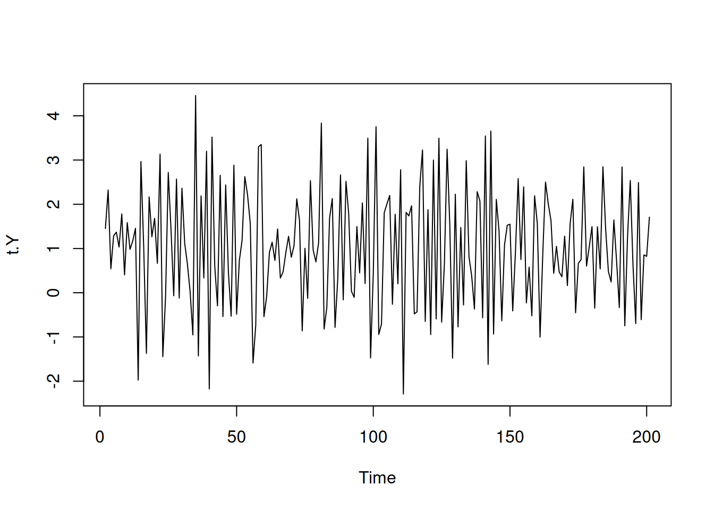
plot(t.Z)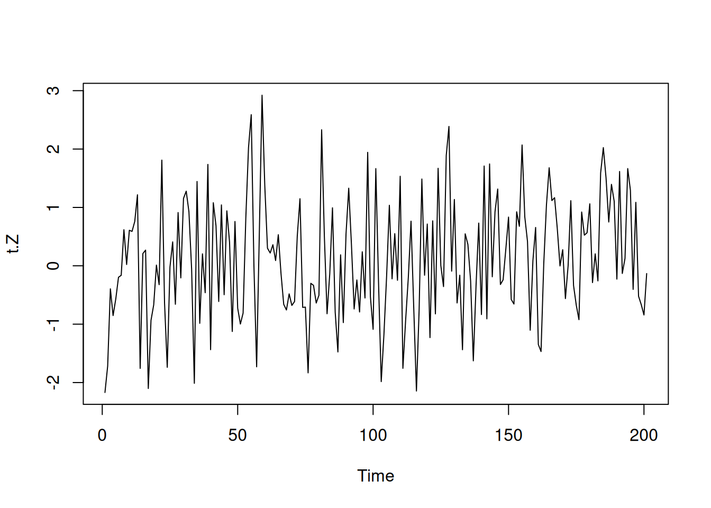
library(AER)
data("Guns")summary("Guns") Length N.unique N.blank Min.nchar Max.nchar
1 1 0 4 4 # verify that panel is balanced
years <- length(levels(Guns$year))
states <- length(levels(Guns$state))
years * states == nrow(Guns)[1] TRUEThe dataset is balanced!
library(plm)
model.se <- plm(
formula = log(violent) ~ law,
data = Guns,
index = c("state", "year"),
model = "within"
)
model.se
Model Formula: log(violent) ~ law
Coefficients:
lawyes
0.11366 coeftest(model.se, vcov. = vcovHC, type = "HC1")
t test of coefficients:
Estimate Std. Error t value Pr(>|t|)
lawyes 0.113663 0.035689 3.1848 0.001488 **
---
Signif. codes: 0 '***' 0.001 '**' 0.01 '*' 0.05 '.' 0.1 ' ' 1model = plm(log(violent) ~ law, data = Guns, index = c("state", "year"), model = "pooling")
pFtest(model.se, model)
F test for individual effects
data: log(violent) ~ law
F = 260.5, df1 = 50, df2 = 1121, p-value < 2.2e-16
alternative hypothesis: significant effects